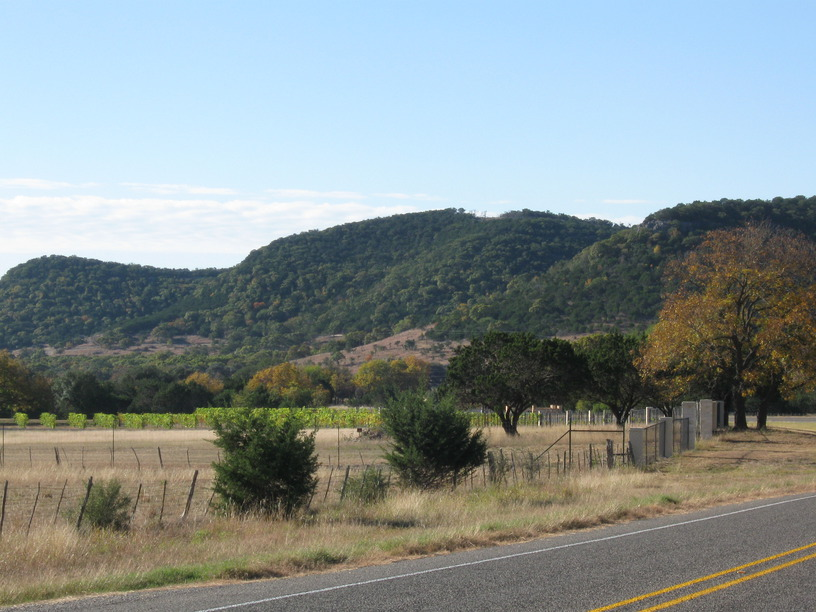
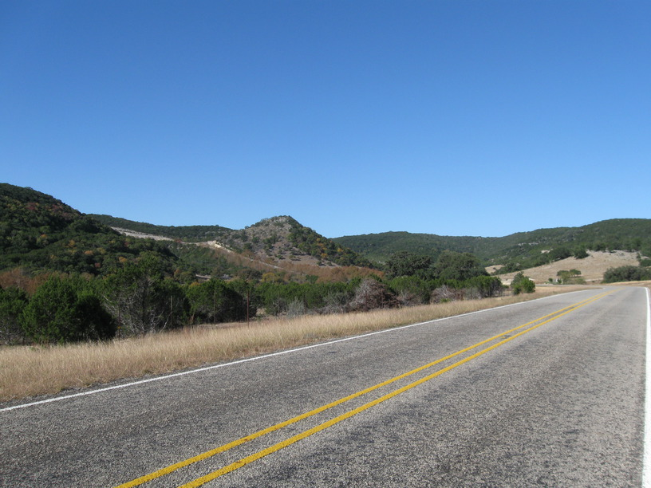
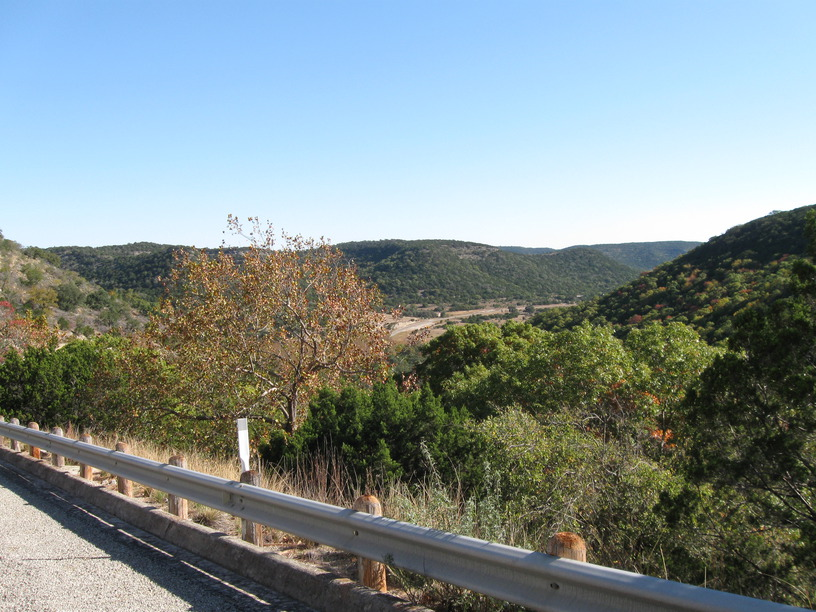
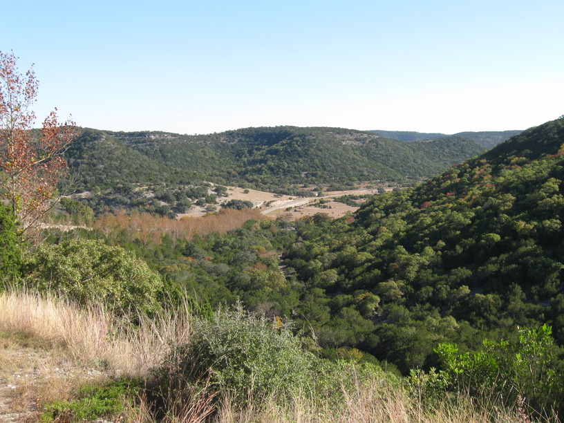
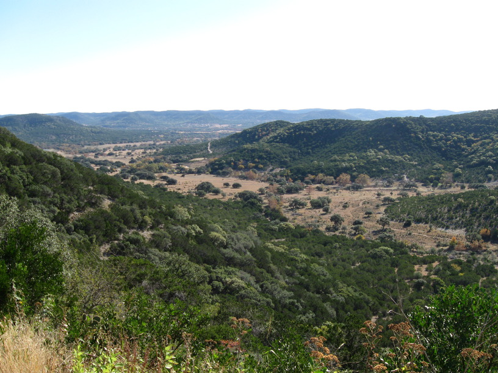
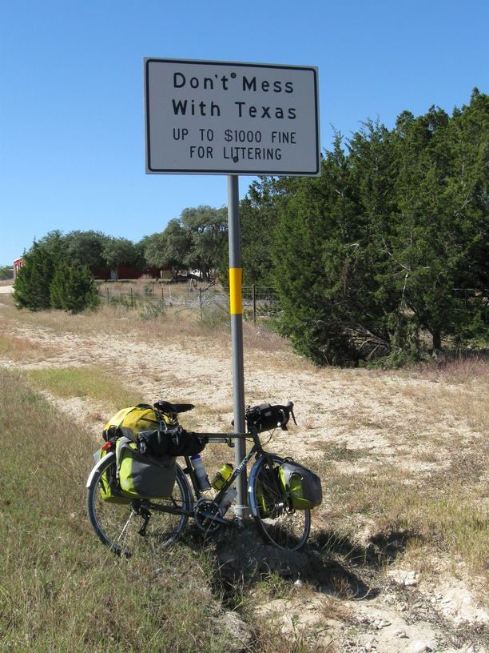
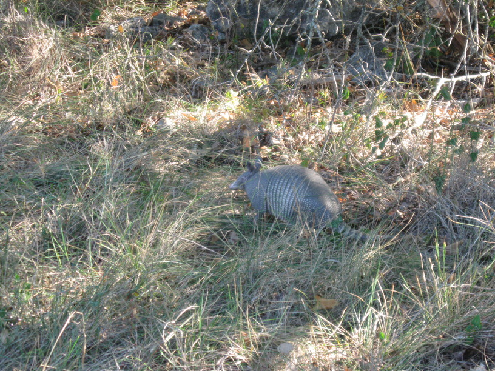

7 Nov 2008, Montell, TX
What a day. As I rolled out of camp this AM my back wheel was feeling flat—I could feel every little rock & bump. I checked it as I got up to the road, and it certainly was flat. While changing a tire isn't the most pleasant way to start the day, I knew I was getting out early (it was ~8:15), and that I had a short (but hilly) day. I actually got rolling around 9, and at my first stop (a restroom break) I had two women ask me about my trip & talk for a bit about the area & terrain.
The terrain was noteworthy because of three major climbs, each a good 500', up winding roads with beautiful scenery on the way. The descents were fun, of course & I was reminded of Brazil tour, when we drove through the mountains.
I lunched in Leakey & stopped into the library to email Mom & Dad, since I had no cell reception. A nice couple who were working there told me about hosting a group of cyclists who came through at some point. They were very friendly & the man gave me his card before I left.
My stop tonight was arranged through warmshowers.org. I'm staying with Alice, who has been a generous hostess along with her boyfriend Andre. I did laundry & got a shower & a hot meal, so I'm pretty happy. Tomorrow I'm staying with another warmshowers.org user, and Alice says she's got family & friends spread between here & El Paso to keep me covered.






